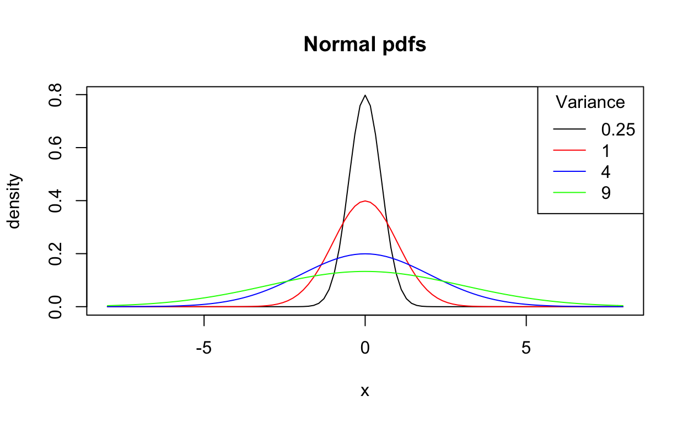
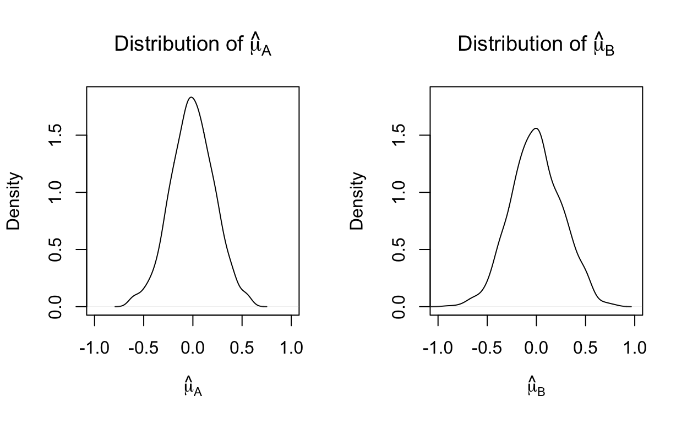

Probability density functions
Continuous probability distributions
With discrete distributions, we defined the probability mass function (pmf) as \(f(x) = P(X = x)\). However, we have left the corresponding function for continuous distributions a mystery… until now.
A continuous random variable can take on any value within a given interval. Unlike discrete distributions, for which we could list the possible values (even if they go off to infinity, like the Poisson distribution, we can imagine that we could just keep counting and counting…), the possible values of a continuous distribution aren’t countable. For example, consider the uniform(0, 1) distribution, which has equal probability over the interval between 0 and 1. What’s the first value that comes after 0?
That’s of course not a question that you can answer, though it may provide some intuition to the following statement: for a continuous random variable, the probability of any given value is 0. That is, \(P(X = x) = 0\) for all \(x\). If you are drawing from the Poisson(2) distribution we keep looking at, some of the time you’ll get values of 0 or 1, for example. But if you are drawing from a uniform(0, 1) distribution, the probability that you’ll get exactly 0.5 is 0.
Because of this, we need a function that differs from the pmf: the probability density function, or pdf. We can’t define the pdf the same way we defined the pmf for a discrete variable. We’ll still refer to it as \(f(x)\), but its values aren’t probabilities, they’re “densities”. Unlike a probability, a probability density can have values that are greater than 1! You can think of them as relative probabilities. Values of \(x\) with larger densities are more likely than those with smaller densities.
Let’s look at the pdf of the standard normal distribution. This is our first continuous probability distribution: the normal, or Gaussian, distribution. This is the one with the famous bell-curve shape.
A normally distributed random variable \(X \sim N(\mu, \sigma^2)\) is defined by two parameters: its mean (\(\mu\)) and its variance (\(\sigma^2\)).
What does that mean? The \(\sim\) symbol tells us how the random variable \(X\) is distributed (you can read \(\sim\) as “is distributed”). In this case, it follows a normal (abbreviated \(N\)) distribution. The values in parentheses are the parameters that characterize that distribution. The normal distribution has two, but we saw earlier that a Bernoulli distributed random variable is defined by one parameter, its probability \(p\), as is a Poisson distributed random variable, which has a rate parameter \(\lambda\). We could therefore write \(Y \sim Bernoulli(p)\) and \(Z \sim Poisson(\lambda)\) for random variables \(Y\) and \(Z\) that follow those respective distributions.
The standard normal is has mean 0 and variance 1: we could write it normal(0, 1). Here’s its pdf:
Although the values along the y-axis aren’t probabilities, one important thing you should know about pdfs is that no matter the scale on the x-axis or the magnitude of the density values on the y-axis, the function will always integrate to 1. That is, \(\int_{-\infty}^{\infty} f(x) \, dx = 1\). That’s because the total probability of all the possible values of the distribution has to be 1 – the exact same reason our pmfs for discrete distributions summed to 1.
Return to the cdf
We can define the pdf in terms of the cumulative distribution function (cdf), or \(F(x)\). Before we do that, let’s review cdfs, and in particular, see that we can apply them to continuous distributions.
Remember that the cdf is defined as \(F(x) = P(X \leq x)\). This holds true for both continuous and discrete random variables.
Also remember what we said about the whole pdf integrating to 1: the area under the curve represents the total probability. So if we want to know, say, \(F(1) = P(X \leq 1)\) we can just integrate over the pdf from \(-\infty\) to \(1\): \[F(1) = \int_{-\infty}^1 f(x) \,dx \; \text{, where } f(x) \text{ is the standard normal pdf.}\]

It turns out that the blue area, \(F(1) \approx 0.84134\). That’s the probability that a standard normal random variable is \(\leq 1\). We’ll come back to this number in a bit.
Intuiting the cdf and its relationship with the pdf
Take a second to think about what the function \(F(x)\) looks like for the standard normal, based on the picture of its pdf. (Try to draw it out!) Think about how the integral changes as you increase the values of \(x\). How does \(F(-2)\) compare to \(F(-1)\) and \(F(0)\)? What are the limiting values as \(x\) approaches \(- \infty\) and \(\infty\)? Make sure your drawing of \(F(x)\) matches the correct answers to the following questions, which you should know from the introduction to cdfs in the context of discrete distributions.
Does this look like what you drew? This is the standard normal cdf:
We have defined the cdf as \(P(X \leq x)\), and we have some idea about how it’s related to the pdf via an integral. We still don’t actually have a definition for the pdf, though!
Remember something super important from calculus? Like, say, its Fundamental Theorem? It basically told us we could go back and forth between derivatives and integrals. We have the cdf in terms of the integral of the pdf, so let’s just go backwards and define the pdf in terms of the derivative of the cdf.
\[f(x) = F'(x) = \frac{d}{dx}F(x)\]
What is this telling us? If we evaluate the derivative of the cdf at any point \(x\), we get the density at that point, or \(f(x)\).
Is this intuitive? Look back at the graph of the standard normal cdf.
The slope of the function \(F(x)\) is steepest at 0. That means its derivative, and therefore \(f(x)\), is the largest at 0. Does this match what we saw in the graph of \(f(x)\) above?
What about when \(F(x)\) is the flattest, and \(f(x)\) the smallest – that is, around -4 or 4? (If this graph could go from \(-\infty\) to \(\infty\) it would, those are just arbitrary endpoints.) Well, \(P(X \leq -4)\) is not much different from \(P(X \leq -3.75)\), and \(P(X \leq 4)\) is not much different from \(P(X \leq 4.25)\) because there’s not a lot of chance that the random variable will take on values in those intervals. That matches what we saw in the pdf: the density, or relative probability, between each pair of those values is very low. Around 0, however, the density is high, so \(P(X \leq -0.25)\) is very different from \(P(X \leq 0)\) is very different from \(P(X \leq 0.25)\).
Other examples of distributions
For each of the following three distributions, compare the cdf to the pdf. Find the x-values with the highest densities and note that they correspond to the places on the cdf with the largest slope. Confirm that each pdf and cdf adheres to the rules that we’ve laid out for them. 


The normal distribution in R
It turns out that the pdf for the normal distribution is defined by: \[f(x) = \frac{1}{\sqrt{2\pi\sigma^2}}\exp\left(-\frac{1}{2}\left(\frac{x - \mu}{\sigma}\right)^2\right)\] so we can just integrate that function from \(-\infty\) to 1 with \(\mu = 0\) and \(\sigma^2 = 1\) to get \(F(1)\), the value that we saw above was equal to about 0.84. We don’t expect you to do that yourselves, though! That’s what R is for.
Remember how we used functions for the cdfs of discrete random variables using the prefix p earlier? We can do the same with continuous distributions. The “shortcut” for the normal distribution is norm, and the set of functions take the arguments mean = and sd = (note the use of \(\sigma\) as an argument, although we usually refer to the variance parameter \(\sigma^2\) when we’re talking about the normal distribution). It turns out that the default values of mean= and sd= are 0 and 1, respectively, so if you want the standard normal, you don’t need to specify the parameters.
See if you can find \(F(1)\) for the standard normal.
pnorm(1)Let’s think about what this value means for a bit.
If we were able to draw an infinite number of samples from a standard normal distribution, then about 84% of them would be < 1. When are we ever drawing infinite samples from a standard normal distribution though? If you said never, you’re absolutely right. Nonetheless, this and other values from the standard normal cdf are still incredibly helpful and you will end up using them all the time!
Let’s first see what it would look like if we could draw a ton (though not an infinite number!) of realizations from a standard normal, which R allows us to do. The prefix R, when used with the distributional abbreviations, gives random (really pseudo-random) draws from that distribution. Let’s save 10,000 of them to the vectorx. Try using the functions you know on that vector. Don’t print out the whole vector, though, because it’s huge! You can also try to figure out other functions which may be useful – often they’re very common-sense. Try sd() or min().
set.seed(123)
x <- rnorm(10000)set.seed(123) below. This gives R a certain random number to start at so that we can all get the same values on our computers. Whenever you’re running code with a set.seed() command, make sure to re-run that line every time you re-run the code, so your results match up. If you’re doing your own simulation, pick a random integer as an argument for the function – don’t always use 123!)
set.seed(123)
x <- rnorm(10000)Let’s first try to recreate the pdf for the standard normal using these data. Remember that since we are in the continuous case, \(f(x) \neq P(X = x)\) for \(X \sim Normal(0, 1)\). To see this in action, consider \(P(X = 0)\). This is the mean of the distribution – and the height of the bell shape, so we might expect the largest value if we run mean(x == 0) (recall that’s how we can estimate a probability from that data).
mean(x == 0)You were certainly expecting this if you looked at the data, perhaps with head(x). Of course none of them would be exactly 0.
Now see if you can estimate \(F(1)\) using these data.
mean(...) # what logical statement should you use?mean(x <= 1)You didn’t get exactly \(0.84134\), because we are working with a finite sample, so we can only estimate \(F(1)\), with some error. It should be close, though! (That’s because of the law of large numbers, which tells us that sample means approach expected values as \(n\) approaches \(\infty\). We’ll look at expected values in the next section.)
Finally, let’s see if the values we drew in match the standard normal cdf in general, and not just at \(F(1)\). Instead of checking every possible value between \(-\infty\) and \(\infty\) (impossible!) we can use the ecdf() (empirical cumulative distribution function) command. We’ll then plot a dashed red line with the true values on top to compare (don’t worry about the code here, but see if you can decode it, perhaps using the help files as a guide).
plot(ecdf(x))
curve(pnorm(x), add = TRUE, col = "red", lty = "dashed")Looks great!
More resources
Learn more about continuous random variables and probability density functions here.
Expectations and variance
We’ve already seen a couple of ways we can describe distributions: \(F(x)\) and \(f(x)\). In particular, in the last section we saw how those are related for continuous distributions. However, we need some other tools to help us characterize distributions, particularly when we want to compare them.
Expectations
The expected value, or expectation, \(E[X]\) tells us the average value of the random variable \(X\): its mean.
Expectations are calculated by summing or integrating \(x \times f(x)\) over the real line. (We can sum for discrete random variables but have to integrate for continuous random variables.) \[\text{E}[X] = \sum_{x \in \mathcal{X}} x\, f(x)\]
\[\text{E}[X] = \int_{-\infty}^{\infty} x\, f(x)\, dx\] Remember that \(f(X)\) is like a relative probability for continuous random variables (and of course, the actual probabilities \(P(X = x)\) for discrete variables). So what these expressions are saying is that to find the average value of the random variable \(X\), we have to weight all the values it can take on by their relative probabilities. (In the summation notation, the \(x \in \mathcal{X}\) just means that we sum over all the possible values \(X\) can take on.)
Think about the Normal(\(0, 1\)) distribution. The normal distribution has support over the entire real line, which means that the probability \(P(X \leq -2,534,623,623) \neq 0\), and \(P(X > 8,134,235,214) \neq 0\), to take some arbitrary values. However, the density \(f(x)\) evaluated at those is so, so small that it’s basically 0. In other words, it’s incredibly unlikely that we’d ever draw values around those numbers from an N(\(0, 1\)) distribution (think about the maximum and minimum values from your standard normal sample in the last section – were they anywhere near that?). That means when we integrate over extreme values like those, they get basically no weight.
We saw that the standard normal density is highest around 0. You can think of the integral as sweeping over all the possible values: when it gets to those around 0, such as -0.5 or 0.25, it weights them higher, and it weights those the closest to 0 the most. Because in the case of the normal, \(f(x)\) is symmetric, negative values get weighted equally to their positive counterparts, so \(E[X] = 0\). Of course! The 0 in \(N(0, 1)\) already told us that its mean is 0!
If we have a N(\(3, 4\)) distribution, it’s still symmetric, but now symmetric around another value: 
Now the weights that values around 2 get are the same as those around 4, since \(f(2) = f(4)\). Same with \(0\) and \(6\). See how this is going to average out to give us an expected value of \(3\)? We learned something about the central location of the distribution from its expectation.
Calculating an expectation
OK, you don’t have to integrate anything. But how about some summations for discrete distributions?
The Bernoulli(.25) distribution has pmf: \[f(x) = \begin{cases} 0.75 & \text{for } x = 0 \\ 0.25 & \text{for } x = 1 \end{cases} \] So \[\begin{equation*} \begin{split} E[X] & = \sum_{x = 0}^1 x\,f(x) \\ & = 0\times 0.75 + 1 \times 0.25\\ & = 0.25 \end{split} \end{equation*}\]
This, of course, matches what we already know about the Bernoulli distribution: its mean is its probability parameter. We could have replaced \(0.25\) with \(p\) and \(0.75\) with \(1 - p\) and found \(E[X] = p\).
Now look at this distribution: \[f(x) = \begin{cases} 0.25 & \text{for } x = -4 \\ 0.5 & \text{for } x = 1 \\ 0.25 & \text{for } x = 19 \\ \end{cases} \]
Did you do something like this? \[\begin{equation*} \begin{split} E[X] & = \sum_{x} x\,f(x) \\ & = -4\times 0.25 + 1 \times 0.5 + 19 \times 0.25\\ & = 4.25 \end{split} \end{equation*}\]
Note that in both cases, the expected value of the distribution is not a value the random variable itself can have. A binary variable can of course never have the value 0.25, and in the second distribution, \(X\) can only take on three values, none of which is its expectation. This is an important point to remember when we start modeling, because we are often modeling expectations and not the actual observed or observable values of variables.
Another way to describe distributions
We can learn something about the spread of a distribution from its variance: \[Var(X) = E[(X - E[X])^2] = \int_{-\infty}^{\infty} (x - E[X])^2\, f(x) dx \;, \]
where \(E[X]\) is the expectation we’ve already looked at – the mean (again, we can sum instead of integrate for discrete variables).
Notice how we’re doing the exact same thing we did above to calculate the variance, which is the expectation of a function of \(X\). We’re integrating (or summing) that function, multiplied by \(f(x)\), over all the possible values that \(X\) can take on. The function of \(X\) that we’re interested in is \((X - E[X])^2\).
Think of it this way: we want to know, on average (so we integrate over everything, weighted by its relative probability), how far away a random variable might be from its mean (so we find the distance by subtracting). We square it because we don’t care about which direction the distance is in: we want 3 less than the mean to be worth the same as 3 more than the mean. (In fact, if we didn’t square it, we’d just get 0… can you figure out why?)
Compare these distributions: 
All of the above distributions have mean 0, so \(Var(X) = E[(X - E[X])^2] = E[(X - 0)^2]\). Look at a value like 5. All four distributions have non-zero density at \(X = 5\), so when we integrate over 5, that value will make some contribution to the variance. And since they all have the same mean, the value \((X - E[X])^2 = (5 - 0)^2\) is the same. However, \(f(5)\) is much larger for the green line than the red line. So a large value like \((5 - 0)^2 = 25\) will contribute more to the variance for the green distribution. Small values close to 0 still contribute the most for each of the distributions, but they contribute relatively less for the green one, compared to more extreme values. The shape of the green distribution is broader. That’s why its variance is much higher.
Practice with variances
Let’s look back at the distribution above and calculate its variance. We already calculated \(E[X] = 4.25\), so we can plug that into our expression. Again, we are summing over the possible values and weighting by the probabilities of those values, but this time what we are summing is \((x - 4.25)^2\).
As a reminder, the pmf was \[f(x) = \begin{cases} 0.25 & \text{for } x = -4 \\ 0.5 & \text{for } x = 1 \\ 0.25 & \text{for } x = 19 \\ \end{cases} \] so we can calculate the variance as follows: \[\begin{equation*} \begin{split} Var(X) & = \sum_{x} (x - E[X])^2\,f(x) \\ & = (-4 - 4.25)^2\times 0.25 + (1 - 4.25)^2 \times 0.5 + (19 - 4.25)^2 \times 0.25\\ & = 76.6875 \end{split} \end{equation*}\]
Now you try to calculate the variance of the Bernoulli(\(0.25\)) distribution, which we already calculated the mean of (so you can plug that in for \(E[X]\)).
Instead of going through all the math, there are usually closed-form expressions for variances of distributions in terms of their parameters, just like we found that the mean of a Bernoulli is just \(p\). Let’s look at in general how we would find \(Var(X)\) if \(X \sim Bernoulli(p)\).
The Bernoulli(\(p\)) distribution has pmf: \[f(x) = \begin{cases} 1 - p & \text{for } x = 0 \\ p & \text{for } x = 1 \end{cases} \] so \[\begin{equation*} \begin{split} E[(X - E[X])^2] & = \sum_{x = 0}^1 (x - E[X])^2\,f(x) \\ & = \sum_{x = 0}^1 (x - p)^2\,p^x(1 - p)^{1 - x}\\ & = p^2(1 - p) + (1-p)^2p \\ & = p^2 - p^3 + p - 2p^2 + p^3 \\ & = p(1 - p) \end{split} \end{equation*}\]
This is one of those things you should just memorize, because we use a lot of binary variables in the population health sciences, and each one of them has variance \(p(1-p)\)!
Covariance
Like the name implies, covariance tells us the extent to which two variables vary together, or tend to move in the same direction. If two random variables are independent, knowing about one tells you nothing about the other, so their covariance is zero. Let’s break down its definition: \[Cov(X, Y) = E[(X - E[X])(Y - E[Y])]\] First of all, note that if we replace \(Y\) with \(X\) – so look at the covariance of \(X\) with itself – we are back to the definition of variance. The covariance just extends the same concept to another variable. When \(X\) is far from its mean at the same time \(Y\) is from its mean, then the covariance will be large. This implies that they are moving together, away from their respective means at the same time (and of course close to their respective means at the same time). If the two variables are independent, then, on average, the probability that \(X\) is above its mean and \(Y\) is above its mean is balanced out by the probability that \(X\) is above its mean and \(Y\) is below its mean (and vice versa), since they happen equally often if \(X\) and \(Y\) have no relationship.
On average, when someone is heavier than the mean weight in the population, they will also be taller than the mean height. When someone is shorter, then also tend to be lighter. Since both variables tend away from the mean in the same direction, their covariance is positive. However, if we are looking at the relationship between animal size and sleep duration, we will see a different relationship. Animals like elephants and giraffes tend to be bigger than the average animal, and they only sleep a few hours a day. The animals that sleep more than average, like bats and chipmunks, are the smallest ones. This inverse relationship means that the covariance between those two variables is negative – on average, when one is above the mean, the other is below, and vice versa.
Properties of the mean and variance
There are also some simple rules for means and variances – of any distribution – that you should memorize. In each case take \(a\) and \(b\) to be scalars; that is, a single real number, while \(X\) and \(Y\) are random variables: \[E[aX] = aE[X]\] \[E[X + Y] = E[X] + E[Y]\] \[E[aX + bY] = aE[X] + bE[Y]\] \[Var(aX) = a^2Var(X)\] \[Var(X + Y) = Var(X) + Var(Y) + 2Cov(X, Y)\] \[Var(aX + bY) = a^2Var(X) + b^2Var(Y) + 2abCov(X, Y)\] \[Var(X) = E[(X - E[X])^2] = E[X^2] - (E[X])^2\]
Use this code box to explore these rules. I’ll start you off with the first one. You already have seen mean(); you’ll also want to use the functions var(), and cov(). Note that even though we have been mostly using the normal distribution for simplicity, these rules are true of any distribution, so play around! I’ll use the exponential, which is another continuous distribution, but you can try any others (remember they each have their own arguments; the exponential takes rate =). When looking at two random variables \(X\) and \(Y\), you can even use two different distributions.
X <- rexp(n = 1000, rate = 4)
a <- 92
mean(a * X)
a * mean(X)Of course, we are showing these rules with sample means and variances, and not the true parameters. If you drew from a Bernoulli distribution, you probably noticed that the mean of your sample wasn’t exactly \(p\) and the variance not exactly \(p(1 - p)\). In a large enough sample, however, the sample values should be quite close to the true parameters. We’ll learn more about this in the modeling and estimation section.
Conditional expectations
Like probabilities, we can also have conditional expectations, which we can write like this: \(E[X | Y = y]\). We are still curious about the average value of the random variable \(X\), but now we only want to know its mean when \(Y\) takes on a certain value.
Previously we dichotomized age (\(A < 50\), \(A \geq 50\)) when we looked at its relationship with disease status. While in some situations it may be appropriate to consider all people older than 50 “old”, and all those younger “young”, and only compare those two large strata, in other situations we might be concerned with the average age, and not the proportion above 50. We might, for example, want to compare \(E[A | D = 1]\) and \(E[A | D = 0]\), the expected value of age in the diseased and non-diseased, respectively. In a sample, of course, we could just split the data into the two disease groups and calculate the sample mean within each one to estimate those quantities.
In many situations, however, we want to condition on multiple variables. For example, we might want to compare the average age among the diseased and non-diseased, but only among people who test positive for disease. In other words, we want to “hold constant” test status. This is perhaps not the most realistic example, so let’s move to something new. Instead let’s say we are interested in age at onset of puberty. In particular, we may want to know if birthweight is associated with the timing of onset. However, we don’t want to compare boys and girls – we know they’re not directly comparable in both birthweight and age at puberty – so we would like to condition on child sex as well.
Let \(A\) = age at onset of puberty, \(B\) = birthweight in grams, and \(G = 1\) if a child is a girl and \(0\) otherwise. See if you can translate the following difference in conditional expectations into a research question: \[E[A | B = b + 100, G = g] - E[A | B = b, G = g]\] We want to know, on average, what the difference is in age at onset of puberty associated with a 100g difference in birthweight (i.e., from \(b\) to \(b + 100\)), holding child sex constant (at \(g\)). If you have interpreted parameters from regression models before, you may find this language familiar. Notice, though, that we have no model, and we haven’t said anything about how we’re estimating this quantity: we’ve just defined what we’re interested in as a difference in conditional expectations. We’ll get to the estimation later.
Factor variables in R
There are quite a few datasets built into R that are often used in examples in the help files or for teaching. We’ll play around with one of those datasets now. To load the iris dataset, use the function data(iris). Then use the functions you know to explore the dataframe and the variables that make it up before moving on. You can also run ?iris to learn more about the data.
You may have noticed that while four of the variables are numeric, one is not: iris$Species. Use the class() function on this variable:
This is a “factor”, or categorical variable. Factor variables are not as straightforward to use as numeric or logical variables, but they are a very useful data type when doing statistics, because R automatically does some of the annoying work for you.
Factor variables have “levels”. Although their levels are usually words, they don’t act like character variables. Instead, each one of the levels is secretly an integer, starting with 1. We’re going to use a tiny subset of the data called iris_sub to explore this further.
iris_sub <- iris[c(1, 58, 34, 111, 89),]
fruits <- as.factor(c("apple", "grape", "grape", "orange", "grape", "apple"))iris_sub$Species
as.numeric(iris_sub$Species)
levels(iris_sub$Species)levels() function extracts the levels from a factor variable like Species. The levels are printed in order, so that the first listed is 1, the second 2, and so on. We can see that the factor labels are really just hiding the integer values by using the function as.numeric(), which, among other things, can turn a factor variable into a numeric variable. Note that this only works because the variable is of that type – it wouldn’t work on a character vector, as you can see below.
as.numeric(c("setosa", "versicolor", "setosa", "virginica", "versicolor"))However, we can convert a character vector into a factor. R will generally do this automatically when you read in data, (unless you use the argument stringsAsFactors = FALSE, but you’ll get a chance to practice reading in data once class starts), which is usually helpful, unless you have a variable that you want to remain in character format – say, the names of all the people in the class.
fruits <- as.factor(c("apple", "grape", "grape", "orange", "grape", "apple"))
fruitsNotice that when you create a factor from a character vector as above, the levels are automatically created in alphabetical order. The first level (in this case, “apple”) will be the reference level for any comparisons made with the other levels. Often, however, we want to reorder the levels, and in particular choose a new reference level, or change the names of the labels for the levels.
fruits2 <- factor(fruits, levels = c("orange", "grape", "apple")) #reorder
fruits2fruits3 <- relevel(fruits, ref = "orange") # just choose new reference
fruits3fruits4 <- factor(fruits, labels = c("APPLE", "GRAPE", "ORANGE")) # relabel
fruits4Notice that in each case, the observed values retain the same values (though perhaps not the integers behind them) and are in the same order, it’s the levels that have changed.
Returning to theiris_sub dataset, create another variable new_species in the same dataset which is also a factor variable, but which has levels “VIRGINICA”, “VERSICOLOR”, and “SETOSA”, in that order. Print out that variable as well as the dataset to make sure that you didn’t change the observations.
iris_sub$new_species <- # code hereiris_sub$new_species <- factor(iris_sub$Species, ...)iris_sub$new_species <- factor(iris_sub$Species, levels = c("virginica", "versicolor", "setosa"), labels = c("VIRGINICA", "VERSICOLOR", "SETOSA"))
iris_sub$new_species
iris_subiris dataset. Previously we estimated conditional probabilities by creating new datasets using the subset() function. Let’s review that here. Calculate the mean petal length among the versicolor species.
versicolor <- subset(iris, subset = Species == "setosa")
mean(versicolor$Petal.Length)There are a number of ways to manipulate and summarize data in R. Some people use the functions in base R, others prefer packages like dplyr and data.table. Becoming fluent in one or more of these strategies will help you immensely with data management and calculating descriptive statistics. We’re just using base R functions in this tutorial, but you can learn more about dplyr here and data.table here.
aggregate() function. The first argument is the variable we are trying to summarize using a function whose name we supply to the FUN = argument. The by = argument must be a list (a type of object we haven’t covered yet, but you can easily create one with the function list()) of the factors you want to group by.
aggregate(iris$Petal.Length, by = list(iris$Species), FUN = mean)Use the same function to find the standard deviation of the petal width within each species.
aggregate(iris$Petal.Width, by = list(iris$Species), FUN = sd)Now let’s try to put all of these ideas together. Another dataset in R is called mtcars. In this dataset, according to the help file, the am variable contains information on type of transmission (0 = automatic, 1 = manual) and vs on the type of engine (0 = V-shaped, 1 = straight). Create two new variables, transmission and engine, with this same data in the form of factors with appropriate labels. Make “manual” and “straight” the reference levels. Then calculate the conditional means of the mpg variable for each combination of transmission and engine type using the aggregate() function.
mtcars$transmission <- factor(...)mtcars$transmission <- factor(mtcars$am, levels = c("1", "0"), labels = c("manual", "automatic"))aggregate(mtcars$mpg, by = list(..., ...), FUN = mean)mtcars$transmission <- factor(mtcars$am, levels = c("1", "0"), labels = c("manual", "automatic"))
mtcars$engine <- factor(mtcars$vs, levels = c("1", "0"), labels = c("straight", "V-shaped"))
aggregate(mtcars$mpg, by = list(mtcars$transmission, mtcars$engine), FUN = mean)Matrix notation and multiplication
We often use matrix notation in statistics because it is much simpler when we are working with multiple variables. Matrix multiplication allows us to easily compute sums and products across a number of variables. Let’s review the rules, but first let’s define the types of objects we’re working with.
\[a = a \text{ , a scalar}\]
\[ \mathbf{b} = \begin{bmatrix} b_1 \\ b_2 \\ \vdots \\ b_p \end{bmatrix} \text{ , a vector of length $p$} \]
\[ \mathbf{X} = \begin{bmatrix} x_{11} & x_{12} & \cdots & x_{1p} \\ x_{21} & x_{22} & \cdots & x_{2p} \\ \vdots &\vdots & \ddots & \vdots \\ x_{n1} & x_{n2} & \cdots & x_{np} \end{bmatrix} \text{ , an $n \times p$ matrix} \]
A scalar is just a single value. A vector is a column of values (e.g., observations of random variables or estimates of parameters) and can also be considered a \(p \times 1\) matrix. Note that when we label the dimensions of a matrix or index its values, we do it in the order \(rows \times columns\). This is also the order in which matrices are indexed in R, so make sure you memorize it. Vectors and matrices are often written in bold to make it clear they are not scalars.
When we multiply a scalar by a vector or a matrix, we can just do so element by element:
\[a\mathbf{b} = \begin{bmatrix} ab_1 \\ ab_2 \\ \vdots \\ ab_p \end{bmatrix} \hspace{1cm} a\mathbf{X} = \begin{bmatrix} ax_{11} & ax_{12} & \cdots & ax_{1p} \\ ax_{21} & ax_{22} & \cdots & ax_{2p} \\ \vdots &\vdots & \ddots & \vdots \\ ax_{n1} & ax_{n2} & \cdots & ax_{np} \end{bmatrix} \]
However, when we multiply vectors and matrices, we need special rules. We can only multiply vectors of the same length, but we have to “transpose” one before we can do so. Consider two vectors of length \(p\), \(\mathbf{b}\) and \(\mathbf{c}\).
\[ \mathbf{b}^T\mathbf{c} = \begin{bmatrix} b_1 \\ b_2 \\ \vdots \\ b_p \end{bmatrix}^T \begin{bmatrix} c_1 \\ c_2 \\ \vdots \\ c_p \end{bmatrix} = \begin{bmatrix} b_1 & b_2 & \cdots & b_p \end{bmatrix} \begin{bmatrix} c_1 \\ c_2 \\ \vdots \\ c_p \end{bmatrix} \]
The superscript \(T\) in between the vectors stands for “transpose” (an apostrophe is sometimes used instead, as in \(\mathbf{b}'\mathbf{c}\)) and indicates that a vector or matrix should kind of tip over: all its columns become rows instead. That’s why \(\mathbf{b}\) becomes a row vector (or \(1 \times p\) matrix). The reason we do this is because we need dimensions to match up when we multiply vectors and matrices. That is because the number of elements in a row on the left (\(\mathbf{b}^T\)) must equal the number of elements in a column on the right (\(\mathbf{c}\)), so that we can multiply the corresponding elements and then sum over their products. Let’s look at \(\mathbf{b}^T\mathbf{c}\), where there is just one column-row pair to multiply and sum:
\[ \begin{bmatrix} b_1 & b_2 & \cdots & b_p \end{bmatrix} \begin{bmatrix} c_1 \\ c_2 \\ \vdots \\ c_p \end{bmatrix} = b_1c_1 + b_2c_2 + \cdots + b_pc_p = \sum_{i = 1}^p b_ic_i \]
We’ll also use the summation notation above a great deal. All three expressions tell us that we are summing over the products of each of the individual pairs of elements in the vectors \(\mathbf{b}\) and \(\mathbf{c}\). It is clear why only two vectors of the same length can be multiplied. And think about what results from that multiplication: just a scalar (i.e., the product is of dimension \(1\times1\)).
One situation that occurs often in statistics is the product of a vector with itself:
\[ \mathbf{b}^T\mathbf{b} = \sum_{i = 1}^p b_i^2 \]
Matrix notation makes it easy to write down a sum of squares.
When we multiply a vector by a matrix, the same idea applies, only this time we have more rows or columns to sum over.
\[ \mathbf{X}\mathbf{b} = \begin{bmatrix} x_{11} & x_{12} & \cdots & x_{1p} \\ x_{21} & x_{22} & \cdots & x_{2p} \\ \vdots &\vdots & \ddots & \vdots \\ x_{n1} & x_{n2} & \cdots & x_{np} \end{bmatrix} \begin{bmatrix} b_1 \\ b_2 \\ \vdots \\ b_p \end{bmatrix} = \begin{bmatrix} x_{11}b_1 + x_{12}b_2 + \cdots x_{1p}b_p \\ x_{21}b_1 + x_{22}b_2 + \cdots x_{2p}b_p \\ \vdots \\ x_{n1}b_1 + x_{n2}b_2 + \cdots x_{np}b_p \end{bmatrix} \]
If this is a new concept to you, study carefully what just happened. We multiplied the elements of the first row of \(\mathbf{X}\) with those over the column vector \(\mathbf{b}\) and summed: this became the first element of our new product (i.e., just like the scalar that results from the vector-vector multiplication above).Then we multiplied the second row of \(\mathbf{X}\) with the column vector \(\mathbf{b}\); this became the second element of the new product, and so on. The product in its entirety is just a vector of length \(n\).
Let’s look at some other ways we could write this same product:
\[ \mathbf{X}\mathbf{b} = \begin{bmatrix} \mathbf{x_1}^T\mathbf{b}\\ \mathbf{x_2}^T\mathbf{b}\\ \vdots \\ \mathbf{x_n}^T\mathbf{b}\\ \end{bmatrix} = \begin{bmatrix} \sum_{i = 1}^p x_{1i}b_i\\ \sum_{i = 1}^p x_{2i}b_i\\ \vdots \\ \sum_{i = 1}^p x_{ni}b_i\\ \end{bmatrix} \]
The \(\mathbf{x_1}^T\mathbf{b}\) form illustrates how each element is just a vector-vector product, where one vector is a row of \(\mathbf{X}\) (so if we consider it as a column vector, must be transposed), which is lower-case and indexed by its row number to make clear that each is a different vector from that matrix. In each case, it should be clear that we’re using the same \(\mathbf{b}\) vector in each new element of our product, but a different one of the \(n\) rows of \(\mathbf{X}\).
Again the ideas extend to matrix-matrix multiplication. Let’s multiply the \(m\times n\) matrix \(\mathbf{Y}\) by \(\mathbf{X}\). The subscripts on the matrices below are used to clarify the dimensions (and provide an easy check that they are compatible). First we multiply the first row of \(\mathbf{Y}\) and the first column of \(\mathbf{X}\) – this is the \(1,1\) element of our resulting matrix, which we’ll call \(\mathbf{Z}\). The appropriate rows are boldface just to show at each step the row and column that are multiplied and the placement in the resulting matrix.
\[ \mathbf{Y}_{m\times n}\mathbf{X}_{n\times p} \] \[ = \begin{bmatrix} \mathbf{y_{11}} & \mathbf{y_{12}} & \cdots & \mathbf{y_{1n}} \\ y_{21} & y_{22} & \cdots & y_{2n} \\ \vdots &\vdots & \ddots & \vdots \\ y_{m1} & y_{m2} & \cdots & y_{mn} \end{bmatrix} \begin{bmatrix} \mathbf{x_{11}} & x_{12} & \cdots & x_{1p} \\ \mathbf{x_{21}} & x_{22} & \cdots & x_{2p} \\ \vdots &\vdots & \ddots & \vdots \\ \mathbf{x_{n1}} & x_{n2} & \cdots & x_{np} \end{bmatrix} = \begin{bmatrix} \mathbf{z_{11}} & & \cdots & \\ & & \cdots & \\ \vdots &\vdots & \ddots & \vdots \\ & & \cdots & \end{bmatrix} \]
\[ = \begin{bmatrix} \mathbf{y_{11}} & \mathbf{y_{12}} & \cdots & \mathbf{y_{1n}} \\ y_{21} & y_{22} & \cdots & y_{2n} \\ \vdots &\vdots & \ddots & \vdots \\ y_{m1} & y_{m2} & \cdots & y_{mn} \end{bmatrix} \begin{bmatrix} x_{11} & \mathbf{x_{12}} & \cdots & x_{1p} \\ x_{21} & \mathbf{x_{22}} & \cdots & x_{2p} \\ \vdots &\vdots & \ddots & \vdots \\ x_{n1} & \mathbf{x_{n2}} & \cdots & x_{np} \end{bmatrix} = \begin{bmatrix} z_{11} & \mathbf{z_{12}} & \cdots & \\ & & \cdots & \\ \vdots &\vdots & \ddots & \vdots \\ & & \cdots & \end{bmatrix} \]
\[ = \begin{bmatrix} y_{11} & y_{12} & \cdots & y_{1n} \\ \mathbf{y_{21}} & \mathbf{y_{22}} & \cdots & \mathbf{y_{2n}} \\ \vdots &\vdots & \ddots & \vdots \\ y_{m1} & y_{m2} & \cdots & y_{mn} \end{bmatrix} \begin{bmatrix} \mathbf{x_{11}} & x_{12} & \cdots & x_{1p} \\ \mathbf{x_{21}} & x_{22} & \cdots & x_{2p} \\ \vdots &\vdots & \ddots & \vdots \\ \mathbf{x_{n1}} & x_{n2} & \cdots & x_{np} \end{bmatrix} = \begin{bmatrix} z_{11} & z_{12} & \cdots & \\ \mathbf{z_{21}} & & \cdots & \\ \vdots &\vdots & \ddots & \vdots \\ & & \cdots & \end{bmatrix} \]
and so on until every row-column combination of \(\mathbf{Y}\) and \(\mathbf{X}\) respectively has been multiplied to form an element of \(\mathbf{Z}\). As before, each of those elements is the sum of the products of the corresponding elements in \(\mathbf{Y}\) and \(\mathbf{X}\).
Think about each of those remaining steps necessary to fill in the rest of \(\mathbf{Z}\).
If you look back carefully at our examples, you’ll notice a pattern. First we multiplied a row vector by a column vector, or a \(1 \times p\) matrix by a \(p \times 1\) matrix, and ended up with a scalar of dimension \(1 \times 1\). Next we multiplied an \(n \times p\) matrix by a \(p \times 1\) vector and ended up with an \(n \times 1\) vector. Finally, when we multiplied an \(m \times n\) matrix by an \(n \times p\) matrix, we got an \(m \times p\) matrix.
In each case, we need the inner pair of dimensions to match, and the outer pair is the dimension of the resulting matrix.
\[\mathbf{Y}_{m\times n}\mathbf{X}_{n\times p} = \mathbf{Z}_{m \times p}\]
Like we saw with the two vectors above, sometimes we need to “transpose” one of the objects to make the dimensions compatible. With a vector, this just meant turning it on its side. With a matrix, the idea is the same: the first row becomes the first column, the second row the second column, and so on. Let’s look at a new matrix \(\mathbf{Q}\):
\[\mathbf{Q} = \begin{bmatrix} r & s & t \\ u & v & w \end{bmatrix} \]
\[\mathbf{Q}^T = \begin{bmatrix} r & u \\ s & v \\ t & w \end{bmatrix} \]
If we wanted to multiply \(\mathbf{Q}\) by itself (similar to squaring a number), first we need to transpose one of the matrices to make the dimension compatible:
\[\mathbf{Q}^T\mathbf{Q} = \begin{bmatrix} r^2 + u^2 & rs + uv & rt + uw \\ rs + uv & s^2 + v^2 & st + vw \\ rt + uw & st + vw & t^2 + w^2 \end{bmatrix} \] Now try writing out \(\mathbf{Q}\mathbf{Q}^T\).
What do you notice about \(\mathbf{Q}^T\mathbf{Q}\) and \(\mathbf{Q}\mathbf{Q}^T\)? They are special types of matrices called symmetric matrices. This means that the element in the \(1,2\) position is the same as that in the \(2,1\) position, the element in the \(1,3\) position is the same as that in the \(3,1\) position, and so on. The diagonal (which in these two cases consists of sums of squares) can be anything. Formally, a matrix is symmetric if it is equal to its own transpose, i.e., if \(\mathbf{X} = \mathbf{X}^T\). Importantly, correlation and covariance matrices are always symmetric.
There is a special symmetric matrix called the identity matrix. What this means is that we can multiply any matrix by the identity and get the same matrix we started with. When we’re working with scalars only, the number 1 acts just like the identity: \(a \times 1 = a\). When we’re working with matrices, we use \(\mathbf{I}\) to indicate the identity matrix: \(\mathbf{XI} = \mathbf{X}\). We define the identity as the matrix with 1’s on the diagonal and 0’s on the off-diagonals, with whatever dimensions are necessary to be compatible with \(\mathbf{X}\):
\[\mathbf{I} = \begin{bmatrix} 1 & 0 & 0 & \cdots \\ 0 & 1 & 0 & \cdots \\ 0 & 0 & 1 &\cdots\\ \vdots & \vdots & \vdots & \ddots \end{bmatrix} \]
The identity matrix has a special property not generally true of matrices: \(\mathbf{IX} = \mathbf{XI}\), meaning that it doesn’t matter in which order you do the matrix multiplication. Except in special cases, this is not otherwise true: \(\mathbf{XY} \neq \mathbf{YX}\).
There’s one more important type of matrix you should know about. Like other functions, matrices can often be inverted. An inverse of a function is kind of like the function that takes you back to your starting point. For scalars, \(a^{-1}=\frac{1}{a}\) is the multiplicative inverse of \(a\): when we multiply the two together, we get 1. Similarly, for a square matrix \(\mathbf{X}\), there sometimes exists an inverse matrix \(\mathbf{X}^{-1}\) such that \(\mathbf{X}^{-1}\mathbf{X} = \mathbf{I}\) and \(\mathbf{X}\mathbf{X}^{-1} = \mathbf{I}\).
The process of finding \(\mathbf{X}^{-1}\) is called inverting a matrix, but it’s not always possible. In particular, if the row vectors or column vectors that make up \(\mathbf{X}\) are not linearly independent, then the inverse \(\mathbf{X}^{-1}\) doesn’t exist. Linear independence occurs when none of the vectors can be written as a linear sum of the other vectors – each holds unique information. An intuitive example of linear dependence is if you have data on a sample consisting of vectors of their ages at the time of survey, years of birth, and years surveyed. Since year surveyed = year of birth + age at survey, one of those vectors contains redundant information (it doesn’t matter which one), and they are not linearly independent.
Remember above when we saw that \(a\mathbf{X}\) just meant multiplying each element in \(\mathbf{X}\) by the scalar \(a\)? Well that means that we can factor values out of a matrix. This may give some intuition for the following rule: \((a\mathbf{X})^{-1} = \frac{1}{a}\mathbf{X}^{-1}\). We can in some sense invert \(a\) and \(\mathbf{X}\) separately, because \(a\) is a scalar and can be factored out. We still have that \((\frac{1}{a}\mathbf{X}^{-1})(a\mathbf{X}) = \mathbf{I}\).
Matrices and their multiplication in R
set.seed(6789)
vals <- rnorm(6)
mat <- matrix(vals, nrow = 2, ncol = 3)
vec1 <- 1:3
vec2 <- 4:6
other_mat <- matrix(rnorm(12), nrow = 3, ncol = 4)
set.seed(6789)We’ve seen vectors in R; now let’s look at matrices, which are another type of object. Like vectors, but unlike dataframes, all the elements of a matrix in R must be of the same class. So we could have character matrices or logical matrices, but we’ll just look at numerical matrices for now. To make a matrix we use the function matrix(), with the first argument a vector of the values we want to fill the matrix. These values get filled in column-by-column unless we specify byrow = TRUE. We tell R the dimensions of the matrix we want with the arguments nrow = and ncol =.
vals <- rnorm(6)
matrix(vals, nrow = 2, ncol = 3)
matrix(vals, nrow = 2, ncol = 3, byrow = TRUE)Notice how the rows and columns are labeled in square brackets. For the rows, the indexing value precedes a comma, for the columns, the index follows the comma. We can extract row or column vectors or single elements with the same approach. Try replacing the values in the square brackets to extract different pieces of this matrix.
mat
mat[2,] # second row
mat[,3] # third column
mat[2,3] # 2,3 elementmat[4,4]t(), because we’re going to need it. It does just what you’d expect.
t(mat)*, we perform element-wise multiplication. Here we start with two vectors of length 3 and end up with another vector of length 3, whereas if we had performed true matrix multiplication we would have ended up with a scalar.
vec1 <- 1:3
vec2 <- 4:6
vec1 * vec2Before running the following code, calculate the value we should get when multiplying the vectors 1, 2, 3 and 4, 5, 6 together. Then, to do true matrix multiplication, use the %*% function.
t(vec1) %*% vec2Let’s confirm our result with a very tedious way of multiplying the two vectors: by extracting the elements that need to be multiplied one at a time, and summing.
vec1[1] * vec2[1] + vec1[2] * vec2[2] + vec1[3] * vec2[3]Notice how when we extract an element of a vector, we don’t need a comma, because there is only one dimension we could be pulling from.
Does that match with what you expected?
Now let’s try to predict how to multiply a vector and a matrix in R. Recalling that that vec1 is a column vector of length 3 and mat is a \(2 \times 3\) matrix, try to answer the following question.
vec1 %*% matAlthough it can be tempting to just try the t() function until something works, make sure you are calculating the product you expect and that it has the dimensions you expect. Use the box below to compare t(vec1) %*% vec2 and vec1 %*% t(vec2). Before you run the code, predict what you will see.
Now let’s multiply two matrices. Besides the \(2 \times 3\) matrix mat, you also have access to a \(3 \times 4\) matrix other_mat.
Multiply the two matrices mat and mat_prod and store their product in the object mat_prod. Then use the class() and dim() functions on that object to see if you ended up with a matrix with the right dimensions.
mat_prod <- mat %*% other_mat
class(mat_prod)
dim(mat_prod)One matrix that is very easy to create in R is the identity matrix \(\mathbf{I}\). The function diag() has several uses. First of all, if you give it a square matrix (e.g., diag(square_mat)), it will pull off the diagonal elements as a vector. Secondly, it will create an identity matrix if instead of a matrix you give it a single number (e.g., diag(6)). The value will give it will be the dimension of the resulting matrix (recall that the identity matrix is always square).
diag() function on a matrix that isn’t square.
mat
diag(mat)diag(6)Now create an identity matrix with which you can pre-multiply (as in \(\mathbf{IX}\)) mat and another with which you can post-multiply (as in \(\mathbf{XI}\)) mat. Store them as id1 and id2 and confirm that when you perform the appropriate multiplication, you end up with the original mat matrix.
id1 <- diag(2)
id2 <- diag(3)
mat
id1 %*% mat
mat %*% id2Finally, let’s add in one more helpful function when working with matrices in R. The solve() function will find the inverse of a matrix, if it exists. First let’s look at the error message we get when the inverse doesn’t exist. We’ll make a \(3 \times 3\) matrix with columns made from the two vectors we already made, along with a third column that is just 2 times the first. This makes it so the columns of the matrix are linearly dependent, and it can’t be inverted.
mat3 <- cbind(vec1, vec2, 2*vec1)
mat3
solve(mat3)Now let’s put it all together. One expression that pops up a lot in statistics is \((\mathbf{X}^T\mathbf{X})^{-1}\). Create a \(3 \times 2\) matrix X using random values from a standard normal distribution. Convert \((\mathbf{X}^T\mathbf{X})^{-1}\) into R code and store the object you create using whatever name you’d like. Then use other functions that you know to explore the object.
X <- matrix(rnorm(6), ncol = 2, nrow = 3)
obj <- solve(t(X) %*% X)
class(obj)
dim(obj)
summary(obj)More resources
This whole section has a lot of great information and practice with matrices. For a more advanced introduction, work through the sections on vectors, linear combinations, and linear dependence here. You can also pick and choose from the videos here, particularly those on functions and linear transformations.
Models and estimation
Estimation of population parameters
When we have a quantitative research question in the population health sciences, we usually are interested estimating in population parameters, or values that define something about a population. Maybe this is \(\mu\), the mean blood pressure in a population, or \(\boldsymbol \beta\), a vector of logistic regression coefficients for risk factors for esophageal cancer. We’ll use \(\theta\) in this section to represent the parameter or vector of parameters that we are interested in estimating.
These parameters are values that are true for a given population – maybe the probability of disease, or an exposure-disease risk ratio. Since we don’t have access to the entire population, we rely on a sample to estimate these parameters. In this tutorial, we’ll assume throughout that we have a random sample. We’ll relax that assumption later in the course.
We express the fact that the actual values we get are estimates by putting “hats” on the same notation we used for the parameters, such as \(\hat{\theta}\). You can read this “theta-hat”.
Sometimes these parameters describe a model. A model is essentially a structure that we assume represents the distribution of the data we have collected. The key word here is assume – modeling generally involves making choices about this structure in order to best approximate reality, while knowing that we will never be able to mimic it perfectly. While assumptions may be inevitable, it is important to be able to recognize and acknowledge those that we make – and those that others make – and, when appropriate, evaluate the sensitivity of these assumptions to other modeling choices we could have made instead.
Other times we can avoid making particular types of assumptions and estimate parameters non-parametrically. For example, if we want to estimate the mean blood pressure in a population, we don’t need to say anything about the distribution of blood pressure – it doesn’t have to be normal, for example – in order to calculate a sample mean.
The sample mean is one example of an estimator. This is a function of the data: a tool or algorithm that takes in observations and produces an estimate for a given parameter. The sample mean \(\frac{1}{n} \sum_{i = 1}^n X_i\) is an estimator of the population mean. (The sample mean gets the special notation \(\bar{X}\), read “x-bar”.) The sample variance \(\frac{1}{n - 1} \sum_{i = 1}^n (X_i - \bar{X})^2\) is an estimator of the population variance. The ordinary least squares estimator is used to estimate regression coefficients for linear regressions.
Unbiasedness
Note that the sample variance as expressed above has in the denominator \(n - 1\). This may seem weird, and indeed \(\frac{1}{n} \sum_{i = 1}^n (X_i - \bar{X})^2\) is another estimator of the population variance. In many cases there are multiple plausible estimators for the same quantity. In fact, you could choose anything as an estimator – say, take the first observation’s value \(X_1\) as an estimator of the population mean \(E[X]\). Or just take the fixed constant 0.5 as an estimator of the population risk. Clearly these are really bad ideas!
We choose estimators based on certain qualities. One desirable quality is unbiasedness. For an estimator to be unbiased, it must on average give us the “right answer”. Formally, we can express this as \[E[\hat{\theta}] = \theta\] This may seem weird. Previously we’ve been taking expectations of random variables. Well, \(\hat{\theta}\) is a random variable. Any function of random variables is itself a random variable. Let’s use some data to compare the two estimators of the variance and see how each random variable behaves.
For simplicity, we’ll assume that we are sampling a random variable \(X\) that is distributed Normal(0,1). That distributional assumption is not necessary to use these estimators, but we want to start with something we know the right answer to. That is, we know that the true variance of \(X\) is 1. We’ll call that parameter of interest \(\sigma^2\). We’ll compare these two estimators of \(\sigma^2\): \[\hat{\sigma}_A^2 = \frac{1}{n - 1} \sum_{i = 1}^n (X_i - \bar{X})^2\] \[\hat{\sigma}_B^2 = \frac{1}{n} \sum_{i = 1}^n (X_i - \bar{X})^2\] We have no idea what the distributions of \(\hat{\sigma}_A^2\) and \(\hat{\sigma}_B^2\) are – although we could figure it out mathematically, it’s a lot easier to find via simulation.
A simulation allows us to repeat experiments over and over. Each of the dice-rolling and ball-drawing examples we looked at earlier was examined via simulation. In the real world, we could draw one sample of \(X\) (let’s say \(n = 20\)) and estimate both \(\hat{\sigma}_A^2\) and \(\hat{\sigma}_B^2\) from that single sample:
set.seed(6789)
n <- 20
X <- rnorm(20) # draw 20 values from standard normal
A <- sum((X - mean(X))^2) / (n - 1)
B <- sum((X - mean(X))^2) / n
set.seed(123) # set seed for reproducible results
res <- matrix(NA, nrow = 1000, ncol = 2) # empty matrix for results
for (j in 1:1000){
X <- rnorm(20) # sample from standard normal
A <- sum((X - mean(X))^2) / (n - 1) # use estimator A
B <- sum((X - mean(X))^2) / n # use estimator B
res[j, ] <- c(A, B) # store in next row of dataset
}set.seed(6789) # set seed for reproducible results
n <- 20 # sample size
X <- rnorm(20) # draw 20 values from standard normal
A <- sum((X - mean(X))^2) / (n - 1) # estimator A
B <- sum((X - mean(X))^2) / n # estimator B
A
BSo we have estimates of \(\sigma^2\): \(\hat{\sigma}_A^2 = 1.280\) and \(\hat{\sigma}_B^2 = 1.216\). But since we only have one sample we have no way to compare the two estimators. Which one is closer to the truth? Well, we know that the true \(\sigma^2 = 1\), so \(\hat{\sigma}_B^2\) looks better, but that could just be a fluke, since the values of \(X\) are random. Besides, we don’t know the truth in real life. What we need to do is find the expectation of each estimator by simulating its distribution – sampling over and over – and taking the mean.
One way to repeat something a number of times in R is through the use of a for-loop. Here’s a simple for-loop. The first line chooses in indexing variable – here, i – and tells R what values to iterate through. On the first iteration, i = 1, the second i = 2, and so on. In between the curly brackets, the code is evaluated for each value of i.
for (i in 1:5){
z <- i + 2
print(z)
}Try it yourself, based on the code above. Iterate through the values 5, 10, and 15 with the variable q. Print out the values of q divided by 5.
for(q in c(5, 10, 15)){
print(q/5)
}There are many possible solutions and only one is shown here. You may have noticed that in a for-loop a line of code that just has a variable name won’t print out unless you explicitly use the print() function.
In our simulation, however, we don’t want to just print out the values of \(\hat{\sigma}_A^2\) and \(\hat{\sigma}_B^2\); we want to store them somewhere. We’ll do that by creating an empty matrix (filling it with NA values, which are R’s way of dealing with missing data). Since we are going to iterate 1000 times and we have 2 values we want to save, the dimensions of the matrix will be 1000 x 2.
set.seed(123) # set seed for reproducible results
res <- matrix(NA, nrow = 1000, ncol = 2) # empty matrix for results
for (j in 1:1000){
X <- rnorm(20) # sample from standard normal
A <- sum((X - mean(X))^2) / (n - 1) # use estimator A
B <- sum((X - mean(X))^2) / n # use estimator B
res[j, ] <- c(A, B) # store in next row of dataset
}The last line of the loop takes the values of the estimators and replaces the jth row of the results matrix with them (remember that leaving the value after the comma blank in the square matrix means you’re referencing the entire row). So after one iteration, only the first row will hold values, and the rest will still be missing; after the second iteration both of the first two rows will hold values, etc.
res object below. One that may be helpful is dim(), which tells you the dimensions of an object.
If you tried to use mean()on the res object, you may have noticed that it combined the columns of the matrix and took the overall mean. That’s not what we want – we want the mean of each column separately. What we are trying to estimate is \(E[\hat{\sigma}^2_A]\) from the mean of the first column and \(E[\hat{\sigma}^2_B]\) from the mean of the second column.
One solution is to extract the columns separately and take the mean of each one with mean(res[,1]) and mean(res[,2]). However, an easier solution is colMeans(res) (there’s also rowMeans()), which will do both at once.
colMeans(res)Remember that to be unbiased, we want \(E[\hat{\sigma}^2] = \sigma^2\). We know that \(\sigma^2 = 1\) because we drew \(X\) from a distribution with variance 1 (the standard normal). We can see from this simulation that \(\hat{\sigma}^2_A\) is an unbiased estimator, while \(\hat{\sigma}^2_B\) underestimates the true value of \(\sigma^2\). (Note that we’ll never get exactly 1 because the simulation has its own random error, but we got close enough to be satisfied.)
This conflicts with what we thought at first: remember that \(\hat{\sigma}^2_B\) from our first sample was closer to 1! We don’t know anything about the expected value of an estimator just from one sample.
Consistency
Another desirable characteristic for an estimator is consistency. This is less mathematically obvious, so we won’t go into much detail, but in words it basically means that as your sample size gets bigger, the estimate you get from that sample gets closer and closer to the true value of the parameter.
The difference between unbiasedness and consistency may seem subtle. But note that unbiasedness doesn’t depend on sample size (there’s no \(n\) in the definition), whereas consistency does. The estimator that just uses data from the first observation in the dataset \(X_1\) is unbiased: on average, as you sample from the population over and over again, the first person’s value will be the population value (assuming your observations are in random order). However, no matter how big your sample gets, you’re still only using data from one person, so your estimate from a single sample is never going to be any closer to the true parameter than if you had only sampled one person.
Efficiency
Consistency is a pretty straightforward requirement for an estimator. But we may be OK with a little bit of bias if the estimator is particularly efficient, or has low variance. Unlike consistency and unbiasedness, efficiency (or precision) is not an absolute concept – it’s not that an estimator is or is not efficient, only that it is or is not relative to another estimator. If we compare two estimators, \(\hat{\theta}\) and \(\tilde{\theta}\), the relative efficiency of \(\hat{\theta}\) means that \(Var(\hat{\theta}) < Var(\tilde{\theta})\), or that on average, you’ll get an estimate that’s closer to the true value of the parameter when you use \(\hat{\theta}\).
Let’s return to our example where we take 20 samples from a standard normal distribution. Instead of estimating \(\sigma^2\), now let’s estimate the mean, \(\mu\). Again, we chose this distribution because we know the right answer: \(\mu = 0\). But now when we compare two estimators we care about whether the estimates are similar to each other – whether they have low variability.
The two estimators of \(\mu\) we’ll compare are the sample mean and the sample median. Since the normal distribution is symmetric, its mean is equal to its median, so they are both estimators of the same quantity. We want to know which one has lower variance.
We can reuse most of the code from last time. Fill in the missing lines to reflect the two estimators we are now comparing, where \(\hat{\mu}_A\) is the sample mean and \(\hat{\mu}_B\) the sample median.
set.seed(123) # set seed for reproducible results
res <- matrix(NA, nrow = 1000, ncol = 2) # empty matrix for results
for (j in 1:1000){
X <- rnorm(20) # sample from standard normal
A <-
B <-
res[j, ] <- c(A, B) # store in next row of dataset
}First check to confirm that both are unbiased estimators of \(\mu\), which in this case is 0:
What do you think?
Before we compare the efficiency of these estimators, let’s look at their sampling distributions as a whole. Here are histograms made from each of the estimates. (The code is essentially hist[,1] and hist[,2], but a bit more complicated than that so it’s not shown. Feel free to check out the help file for hist() and play around.)
This is the empirical equivalent to the probability density function. Recall that \(\hat{\mu}_A\) and \(\hat{\mu}_B\) are just continuous random variables. We haven’t said anything about which distribution each has, but we can describe its characteristics and calculate values like its mean and variance. If it helps to convince you that these sampling distributions are just like the probability distributions we’ve seen, we can turn those histograms into “density plots”, which basically just smooth over the histogram bars. 
The distribution that has smaller variance tells us which of these estimators is more efficient.
We can confirm that by calculating the variance of each of the estimates. Unfortunately there’s no direct equivalent to colMeans() for the variance in base R. Use the var() function on each of the columns separately to compare.
var(res[,1])
var(res[,2])Again, we would never have known this from just one sample. With our one sample, we may happen to get values of \(X\) that give us estimates near the center, or way out in the tails, and we will have no idea which. We want an efficient estimator so the tails are more compact: if we do happen to get a “bad” sample way out there, it won’t be quite as far out!
More resources
Learn more about sampling distributions and estimators here.
Statistical inference
Standard errors
When we do “statistics”, we are using data from a sample to tell us something about the population. In the language of the last section, we are using observations to estimate parameters. OK, great. We use our estimator – and hopefully we chose a good one – and calculate an estimate of the prevalence of depression, or the odds ratio for smoking and lung cancer is, or whatever it is we had a question about. But we only used a single sample to get that estimate! We also want to know, in general, how certain we are that that value is a good measure of what’s going on in the population. If we had chosen a completely different random sample, how different would we expect our estimate to be?
We saw in the last section that our estimates have a distribution. But we only got to see the sampling distribution when we ran simulations. What can we learn about that distribution from only a single sample?
Well, we can assess the variability of our estimates with standard errors. Smaller standard errors mean that we can be more certain that an estimate is close to the true population value of whatever parameter it is we’re trying to estimate. A standard error is simply the standard deviation of the sampling distribution. We calculated the variance of the sampling distribution of two estimators of \(\mu\) in the last section – we could simply take their square roots to get the standard deviation of those distributions, or the standard errors.
Before we see how to estimate these from one sample, take a second to think about what leads to small standard errors. We already compared two estimators in the same samples. What about when we compare the same estimator in different samples?
Since we’ve already compared estimators, let’s just stick with one: the sample mean. Intuitively, if we’re trying to estimate the mean height in a population and we sample 1000 people, we’ll get a more precise estimate than if we only sample 100 people. That is, we’re more likely to be closer to the truth with a larger sample size. If we’re trying to estimate mean height among adults and mean height among 2-year-olds, we’ll get a more precise estimate for the toddlers. That’s because the random variable of interest, height, has a smaller variance in 2-year-olds (they tend to be more similar in size). Our single sample is less likely to have extreme values, so the sample mean is more likely to be close to the population mean.
Before we move on, let’s practice designing simulations to demonstrate both of these concepts. First, let’s compare the two sample sizes, 100 and 1000. A number of the lines in the following code are incomplete, but the structure is almost identical to the previous for loops we ran. Now instead of comparing two estimators, we are using the same estimator in two samples. Fill in the missing pieces.
# set seed for reproducible results
n1 <- # first sample size
n2 <- # second sample size to compare
res <- # empty matrix for results
for (j in 1:1000){
X1 <- # first sample from standard normal
X2 <- # second sample from standard normal
mean1 <- # estimate from first sample
mean2 <- # estimate from second sample
res[j, ] <- c(mean1, mean2) # store in next row of dataset
}
sd(res[,1])
sd(res[,2]) # standard error = sd of sampling distributionset.seed(6789) # set seed for reproducible results
n1 <- 100 # first sample size
n2 <- 1000 # second sample size to compare
res <- matrix(NA, ncol = 2, nrow = 1000) # empty matrix for results
for (j in 1:1000){
X1 <- rnorm(n1) # first sample from standard normal
X2 <- rnorm(n2) # second sample from standard normal
mean1 <- mean(X1) # estimate from first sample
mean2 <- mean(X2) # estimate from second sample
res[j, ] <- c(mean1, mean2) # store in next row of dataset
}
sd(res[,1])
sd(res[,2]) # standard error = sd of sampling distributionWhat are your conclusions? Hopefully you found that a larger sample size leads to a smaller standard error! If you want, use the hist() function to make a picture of the sampling distribution so you can confirm that the one with the larger sample size is tighter.
Now let’s try estimating the means of two different random variables, each with a different variance. Let’s say the first is again standard normal, but the second is \(Normal(0, 2^2)\) (remember that the argument for rnorm() is sd =, which is why I wrote the parameter like that). This time you’re on your own (but feel free to copy and paste code from earlier!). You can use whatever sample size you’d like.
set.seed(456) # set seed for reproducible results
res <- matrix(NA, ncol = 2, nrow = 1000) # empty matrix for results
for (j in 1:1000){
X1 <- rnorm(100) # first sample from standard normal
X2 <- rnorm(100, sd = 2) # second sample from normal(0, 4)
mean1 <- mean(X1) # estimate from first sample
mean2 <- mean(X2) # estimate from second sample
res[j, ] <- c(mean1, mean2) # store in next row of dataset
}
sd(res[,1])
sd(res[,2]) # standard error = sd of sampling distributionWhat are your conclusions now? The standard errors clearly depend on the variability of the random variable that we’re sampling.
The central limit theorem
These two ideas come together in the central limit theorem, which provides a way to approximate sampling distributions from just a single, independent sample. We won’t go into the mathematics behind it, but essentially it tells us that for statistics that are based on sums of independent random variables (like the sample mean), their sampling distributions are asymptotically normal with a variance that depends on the sample size and the variance of the random variable being summed.
For the sample mean \(\bar{X}\), this means that as the sample size grows to infinity, estimates over repeated samples will tend to be normally distributed with a mean that’s the expectation of \(X\) and variance that’s the variance of \(X\) divided by the sample size.
\[ \bar{X} \stackrel{n\rightarrow \infty}{\sim} Normal( E[X], \frac{Var(X)}{n})\] Of course, we never have sample sizes even close to infinity, so we generally just say “in large enough samples”, the distribution is “approximately” normal. Since the standard error is the square root of the variance of the sampling distribution, the standard error of the sample mean is simply \(\sqrt{Var(X)}/\sqrt{n}\). Since we often refer to the variance of a random variable as \(\sigma^2\), we often denote this as \(\frac{\sigma}{\sqrt{n}}\).
Note that we haven’t said anything about the distribution of \(X\) itself: the central limit theorem refers to the distribution of \(\bar{X}\), the sampling distribution. In fact, \(X\) could be anything: any of the distributions we’ve seen so far, or any other distribution (OK, there are some limitations, but none you’ll ever come across in real life). When you think about it, that’s pretty crazy. You can take a sample mean of just about anything, and the distribution of that sample mean will be normal with known mean and variance. That means we don’t actually need to take repeated samples to know the (approximate) sampling distribution! And since we know the sampling distribution, we can estimate standard errors.
Now let’s design a simulation to confirm that the central limit theorem holds and the answer from the question above was truly the correct (approximate) standard error. I’ll tell you what to do in English; you convert it into code. Make sure your results are reproducible.
- Create an object to hold your results
- Sample from the Poisson(9) distribution with \(n = 100\)
- Take the sample mean
- Repeat steps b-c a large number of times
- Calculate a standard error from your estimates
(You may also want to create a histogram to see that they look normal with mean 9)
set.seed(987)
res <- rep(NA, 1000)
for(i in 1:1000) {
X <- rpois(100, 9)
res[i] <- mean(X)
}
sd(res)
hist(res)It turns out that a lot of the estimators we use are based on means and therefore follow the central limit theorem. We can always estimate the variance of the random variable from our sample, and of course we always know the sample size, so the central limit theorem shows up everywhere.
P-values
Many researchers in the population health sciences and other fields have a love-hate relationship with p-values. They are easy to calculate, show up everywhere, and do have some meaning if interpreted correctly. However, they are often misinterpreted, emphasized too heavily, and used to justify conclusions that aren’t warranted. That said, you should be one of the few who understand them, so let’s dive in.
When answering a research question, we usually have a hypothesis in mind – perhaps that some exposure and outcome are related. In the population, this would mean that the exposed group has a different risk of disease than the unexposed group. Importantly, that hypothesized relationship implies a null hypothesis as well: there is no difference between the groups, or no difference from a specified value. If we denote the difference between the groups with \(\theta\), then we can write the null and alternative hypotheses, respectively: \[H_0: \theta = 0\] \[H_A: \theta \neq 0\] Note that here we’re referring to the population parameter \(\theta\), not some estimate \(\hat{\theta}\). We only get to see \(\hat{\theta}\) from our sample, but our question is inherently about the population we care about. In our given sample, there will surely be a difference in whatever it is we’re measuring; it might be very small or it might be big. Whether that difference exists in the population is what we care about. Of course, it might not, and it may be that we only see a difference in our sample due to sampling variability.
The goal of the p-value is to quantify how likely it is that we would see that difference in our sample if there were truly no difference in the population. That is, what is the probability that we would estimate the \(\hat{\theta}\) we did if \(\theta = 0\)?
Let’s assume we’re using a sample size and an unbiased estimator to which the central limit theorem applies. Then we know that \(\hat{\theta} \sim Normal(\theta, \frac{\sigma^2}{n})\). If \(\theta = 0\), as under the null hypothesis, then \(\hat{\theta} \sim Normal(0, \frac{\sigma^2}{n})\). For notational simplicity, let’s refer to \(\frac{\sigma^2}{n}\) as \(se^2\), for standard error squared.
Now let’s standardize our estimate. This means that we divide it by its standard deviation (which is of course the standard error, since we’re talking about a sampling distribution): \(\frac{\hat{\theta}}{se}\). What this allows us to do is count standard deviation by 1’s instead of by multiples of \(se\). So the value \(se\) used to be 1 standard deviation away from the mean, now the value 1 itself is 1 standard deviation away from the mean. In other words, under the null hypothesis, \[\frac{\hat{\theta}}{se}\sim Normal(0, 1)\]
To reiterate, the pdf above is centered at 0 because we are working under the null hypothesis. Calculating a p-value requires assuming that the null hypothesis is true; in this case, that \(\theta = 0\).
Now, we know what value of \(\hat{\theta}\) we actually got from our sample. We know the value of \(se\) because we’ve been able to calculate it using the central limit theorem. To make this more concrete, let’s take the value \(se = 2.5\), and imagine that \(\hat{\theta} = 5\).
Together those values give us \(\frac{\hat{\theta}}{se} = 2\). That means that the \(\hat{\theta}\) value we estimated was 2 standard deviations from 0. Let’s look at it on the standard normal pdf.
Just eyeballing it, we can say that this is a pretty unlikely value in this distribution. In other words, it’s a pretty unlikely value to have been estimated from a population in which the null hypothesis is true. But just how unlikely? That’s what the p-value tells us.
Think back to when we first learned about continuous distributions and pdfs and cdfs. We saw that when we looked at a pdf, we could calculate probabilities as the area under the curve. Specifically, we could integrate over part of the pdf to find the probability of a value in that interval. We don’t care about the probability of the actual value of \(\hat{\theta}\) that we got (remember that with a continuous distribution, that probability is 0 anyway). Instead, we care about a value as or more extreme – that is, equally or further away from 0.
The picture below highlights the probability we’re talking about: 
This picture shows in blue the total probability of drawing a value from a standard normal distribution that is less than -2 or greater than 2. If \(\theta = 0\), this is the total probability of drawing a sample for which \(\frac{\hat{\theta}}{se}\leq -2\) or \(\frac{\hat{\theta}}{se} > 2\). What are the chances that we’d get something this crazy just due to bad luck?
Hopefully you remember how to calculate this area! For the left-hand side of the distribution, we need to calculate \(P(\frac{\hat{\theta}}{se} \leq 2)\) for \(\frac{\hat{\theta}}{se} \sim Normal(0, 1)\). That’s just the cdf of a standard normal: \(F(-2)\). And the other side is just its mirror image, so all we have to do is double that area. See if you can calculate this value in R:2 * pnorm(-2)You should get a p-value of 0.0455. Can you put into words what this value means?
There’s a lot more to statistical inference (and all of these topics!) than what’s on this page. For example, we didn’t cover confidence intervals, which are usually a better idea than p-values. Luckily you have a whole year of PHS 2000 – and the rest of your careers – to put this into practice and learn more!
Final challenge
Write code to calculate a p-value for a difference of two means without using the central limit theorem or any explicit probability calculations (no pnorm(), etc.). Everything else is up to you.
Hint: Generate your observed data once. Then think about what it means for the null hypothesis to be true.
If you need more hints or want to check your thinking or your code, email louisa_h_smith@g.harvard.edu.
Glossary
Bernoulli The distribution of a random variable that takes on values 1 and 0 with probabilities \(p\) and \(1 − p\), respectively; \(f(x) = p^x(1 − p)^{1−x}\).
binomial The distribution of the number of 1s in a series of \(n\) independent 0,1 trials, each with probability \(p\); \(f(x) = \binom{n}{x} p^x(1 − p)^{n−x}\).
central limit theorem (CLT) States, loosely, that the mean \(x\) from a sample of size \(n\) converges to a normal distribution with a mean equal to the population mean \(E[X]\) and variance \(\frac{Var(X)}{n}\) as \(n\) approaches \(\infty\).
confidence interval A range of plausible parameter values around a statistic, constructed so that it will contain the true value in a fixed proportion (usually 95%) of repeated samples.
continuous Can take on any real-numbered value in a range.
correlation Measures the strength and direction of the linear relationship between two variables; \(\rho\).
covariance Measures the direction and extent of the linear relationship between two variables; \(Cov(X, Y)\).
cumulative distribution function (cdf) Gives the probability that a random variable \(X\) takes on value less than or equal to \(x\); \(F(x) = P(X \leq x)\).
discrete Takes on a countable number of possible values.
estimator A function used to estimate a parameter using observed data.
expectation The probability-weighted average over all possible values in a distribution, also called expected value; \(E[X]\) or \(\mu\).
independent Refers to two variables whose distributions do not depend on the values of the other; \(X Y \implies Cov(X,Y)=0\).
independent and identically distributed (i.i.d.) Random variables that have the same probability distribution and are independent.
law of large numbers (LLN) Tells us that the average, \(\bar{X}\), over more and more repeated trials will converge to the expected value, \(E[X]\).
normal A common continuous distribution, also called Gaussian; \(f(x) = \frac{1}{\sqrt{2\pi\sigma^2}}\exp\left(-\frac{1}{2}\left(\frac{x - \mu}{\sigma}\right)^2\right)\)
null hypothesis The hypothesis we attempt to reject with the data, often stating that there is no relationship between two variables; \(H_0\).
parameter A (possibly unknown) characteristic of a probability distribution.
Poisson A discrete distribution that takes on integer values from 0 to \(\infty\), determined by the rate parameter \(\lambda\); \(f(x) = \frac{\lambda^x e^{-\lambda}}{x!}\).
probability density function (pdf) The function of a continuous random variable that defines the relative likelihood of possible values, or the absolute probability of a range of values.
probability distribution A description of the possible values that a random variable can take on and their likelihoods.
probability mass function (pmf) Gives the probability that a discrete random variable is equal to each of its possible values; \(P(X = x)\).
random variable The unknown numerical outcome of some random event.
sampling distribution The probability distribution of a statistic calculated from a random sample.
standard deviation Measures the variability of a random variable in the same units as that variable; \(\sqrt{Var(X)}\) or \(\sigma\).
standard error The standard deviation of the sampling distribution of a statistic; for the sample mean, \(\frac{\sigma}{\sqrt{n}}\).
standard normal Refers to the normal distribution with mean 0 and variance 1.
standardize Transform into units of mean 0 and standard deviation 1 by subtracting the mean and dividing by the standard deviation.
statistic A function of a set of observations.
test statistic A statistic with a cutoff that determines whether or not a null hypothesis is to be rejected.
type I error The probability of rejecting the null hypothesis, given that the null hypothesis is true.
variance Measures how far values of a variable generally are from the mean; \(Var(X)\) or \(\sigma^2\).
More R resources
Used to SAS or STATA? These guides ( SAS and Stata ( 1 & 2)) can help you translate from those languages to R.
Some people love learning R with Swirl, which teaches you to code interactively.
Here’s RStudio’s great list of online resources. In particular, there are some more online tutorials here.
Hadley Wickham is probably the #1 R guru and has written several books about R, which you can read on his website, where you can also learn more about the packages he’s written, including ggplot2.
Here’s another book with a good introduction to data science R, including data visualization.
The fivethirtyeight package has a ton of cool datasets that you can play around with.
If you’re not understanding an error message, clear your workspace and/or restart RStudio and try again. Does the error still show up? Then try writing a minimal working example. What does it take to reproduce the error? Is the problem with your data, your code, or both?
Watch this video of an expert walk through her process of debugging code (even experts get error messages all the time!).
It may sound silly, but copying and pasting error messages into Google is usually the fastest way to solve a tricky problem. You will almost certainly end up on the relevant stack overflow question page, because someone somewhere has experienced the error you’ve encountered.
Struggling with ggplot? Take a look at this cheat sheet or this gallery. This website is another great resource.
Ready to make your plots beautiful? Choose your color scheme with the RColorBrewer package. Explore ColorBrewer palettes here. “Set1” and “Dark2” are favorites for qualitative data and “BuGn” is nice for sequential gradients.
This Rmarkdown cheat sheet is helpful for getting started.
Can’t remember the name of a certain Greek letter? Try detexify.